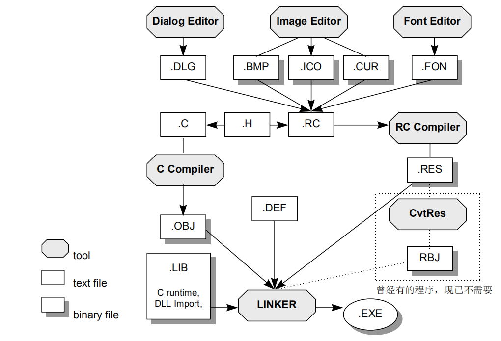
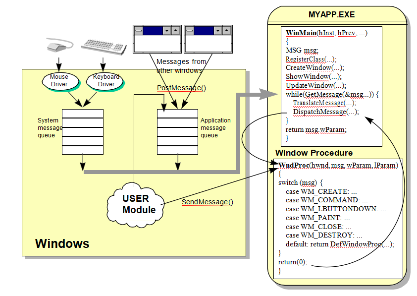

Windows 程序分为「程序代码」和「UI资源」两大部分，通过RC编译器整合为一个完整的EXE 文件。
所谓UI 资源是指功能菜单、对话框外貌、程序图标、光标形状等等东西。
这些UI 资源的实际内容（二进制代码）系借助各种工具产生，并以各种扩展名存在，如.ico、.bmp、.cur 等等。程序员必须在一个所谓的资源描述档（.rc）中描述它们。
RC 编译器（RC.EXE）读取RC 档的描述后将所有UI资源档集中制作出一个.RES 档，再与程序代码结合在一起，这才是一个完整的Windows可执行文件。
Windows 程序的进行系依靠外部发生的事件来驱动。换句话说，程序不断等待（利用一个while 回路），等待任何可能的输入，然后做判断，然后再做适当的处理。上述的「输入」是由操作系统捕捉到之后，以消息形式（一种数据结构）进入程序之中。
3.1 程序初始化过程中调用CreateWindow，为程序建立了一个窗口，作为程序的屏幕舞台。CreateWindow产生窗口之后会送出 wM_CREATE直接给窗口函数，后者于是可以在此时做些初始化操作（例如配置内存、打开文件、读初始数据……）。
3.2 在程序活着的过程中，不断以 GetMessage从消息队列中抓取消息。如果这个消息是WM_oUIT，GetMessage会传回0而结束while循环，进而结束整个程序。
3.3 DispatchMessage通过Windows USER模块的协助与监督，把消息分派至窗口函数。消息将在该处被判别并处理。
3.4 程序不断进行第2步和第3步的操作。
3.5 当使用者按下系统菜单中的Close命令项时，系统送出WM_CLOSE。通常程序的窗口函数不拦截此消息，于是 DefWindowProc处理它。
3.6 DefWindowProc收到 WM_CLOSE后，调用 DestroyWindow把窗口清除。Destroy Window本身又会送出WM_DESTROY。
3.7 程序对WM_DESTROY的标准反应是调用PostQuitMessage。
3.8 PostQuitMessage没什么其它操作，就只送出 WM_QUIT 消息，准备让消息循环中的GetMessage取得，如步骤2，结束消息循环。
Windows的三大核心系统：负责窗口对象产生和消息分发的USER模块，负责图像显示绘制的GDI模块，负责内存、进程、IO管理的KERNEL模块。
试想象一下如何在一个像素阵列上产生窗口对象，其实就是使用GDI绘制窗口，不停的以一定的频率刷新显示在屏幕上，这就是图形界面，如果由在DOS或Windows DOS模拟器下编写图形界面的经验这个比较好理解。所以说其实USER模块中的窗口产生是依靠GDI模块的(包括菜单、滚动条等都是使用GDI来绘制的)。
那么，下面我们就从USER模块和GDI模块来说说Windows 的窗体原理。
如果接触过Win32 SDK编程的知道一个标准Windows窗体的产生过程：
设计窗口类 注册窗口类 创建窗口 显示窗口 启动消息循环泵循环获取消息分发到窗体过程函数处理
贴上一个标准Windows窗体的产生代码：
#include <windows.h>
LRESULT CALLBACK WndProc (HWND hwnd, UINT message, WPARAM wParam, LPARAM lParam);
int WINAPI WinMain (HINSTANCE hInstance, HINSTANCE hPrevInstance, PSTR szCmdLine, int iCmdShow)
{
static TCHAR szAppName[] = TEXT ("窗口类名称");
HWND hwnd;
MSG msg;
WNDCLASSEX wndclassex = {0};
//设计窗口类
wndclassex.cbSize = sizeof(WNDCLASSEX);
wndclassex.style = CS_HREDRAW | CS_VREDRAW;
wndclassex.lpfnWndProc = WndProc;
wndclassex.cbClsExtra = 0;
wndclassex.cbWndExtra = 0;
wndclassex.hInstance = hInstance;
wndclassex.hIcon = LoadIcon (NULL, IDI_APPLICATION);
wndclassex.hCursor = LoadCursor (NULL, IDC_ARROW);
wndclassex.hbrBackground = (HBRUSH) GetStockObject (WHITE_BRUSH);
wndclassex.lpszMenuName = NULL;
wndclassex.lpszClassName = szAppName;
wndclassex.hIconSm = wndclassex.hIcon;
//注册窗口类
if (!RegisterClassEx (&wndclassex))
{
MessageBox (NULL, TEXT ("RegisterClassEx failed!"), szAppName, MB_ICONERROR);
return 0;
}
//产生窗口
hwnd = CreateWindowEx (WS_EX_OVERLAPPEDWINDOW,
szAppName,
TEXT ("窗口名称"),
WS_OVERLAPPEDWINDOW,
CW_USEDEFAULT,
CW_USEDEFAULT,
CW_USEDEFAULT,
CW_USEDEFAULT,
NULL,
NULL,
hInstance,
NULL);
//显示窗口
ShowWindow (hwnd, iCmdShow);
UpdateWindow (hwnd);
//启动消息循环泵循环获取消息分配到窗体过程函数处理
while (GetMessage (&msg, NULL, 0, 0))
{
TranslateMessage (&msg);
DispatchMessage (&msg);
}
return msg.wParam;
}
//窗体过程函数
LRESULT CALLBACK WndProc (HWND hwnd, UINT message, WPARAM wParam, LPARAM lParam)
{
HDC hdc;
PAINTSTRUCT ps;
switch (message)
{
case WM_CREATE:
return (0);
case WM_PAINT:
hdc = BeginPaint (hwnd, &ps);
EndPaint (hwnd, &ps);
return (0);
case WM_DESTROY:
PostQuitMessage (0);
return (0);
}
return DefWindowProc (hwnd, message, wParam, lParam);
}
需要明白的是，所有Windows的窗体及控件归根结底都是使用CreateWindow或CreateWindowEx来创建的，他们都需要标准Windows窗体的产生过程。
普通的窗体好理解，主要需要弄清楚是对话框及控件的产生和消息分派处理流程。
对话框及其子控件的管理依靠Windows内建的对话框管理器，对话框管理器的工作包括：
5.1 根据我们在资源设计器中设计的对话框及子控件产生的.rc文件来自动生成对话框和子控件(如果有手动编写.rc文件的经历的话，知道编写RC文件其实就是指定窗口和子控件大小、类型、样式等参数，对话框管理器将这些参数传入CreateWindow函数产生窗体)
5.2 模态对话框直接显示窗体，非模态对话框消息指明WS_VISIBLE属性的话，需要调用ShowWindow来显示窗体。
5.3 维护一个消息循环泵，对于模态对话框来说这个消息泵的消息不经过父窗口，所以表现为模态；对于非模态对话框这个消息泵消息经过主窗口，必须由主窗口传给非模态对话框，表现为非模态。
5.4 维护一个内建的窗体过程函数，对于对话框来说会处理对话框的关闭打开及子窗口的焦点、tab等，对于子控件也是一样，每个子控件会有自己类型的窗体过程函数，窗体过程函数处理子控件的获得或失去焦点、按下或弹起、创建等表现样式和行为。
对于对话框来说，他会开放一个对话框过程函数，让部分消息先通过对话框管理函数处理，如果对话框过程函数不处理才交给默认的内建过程函数处理，对于子控件来说，他们并没有开放过程函数，而是由内建窗体函数将要处理的消息发给父窗口处理。
那么对话框管理器完成了标准Windows窗体的产生中后半部分工作，至于设计窗口类和注册窗口类这是由Windows自己预先做好了的，如常见的“button”、“listbox”、“edit”类等等。
那么既然所有的窗体(包括对话框和控件)产生过程一样，那么我们就可以将对话框管理器的部分工作替换掉：
6.1 不使用对话框读取.rc模板的方式，直接将参数传递给CreateWindow函数来创建对话框和控件，这就是常见的动态创建控件原理。
6.2 设置控件自绘制如BS_OWNDRAW属性，开放控件的WM_DRAWITEM消息给父窗口，由父窗口来绘制按钮样式，这就是常见的控件重绘原理。
6.3 替换内建的窗体函数，将消息传到自定义的窗体过程函数处理，这就是常见的控件子类化原理。
需要Windows操作系统和开发工具的小伙伴，可以点击下方了解更多免费领取噢~
下一节讲：MFC对话框原理
本页共133段，5099个字符，8922 Byte(字节)